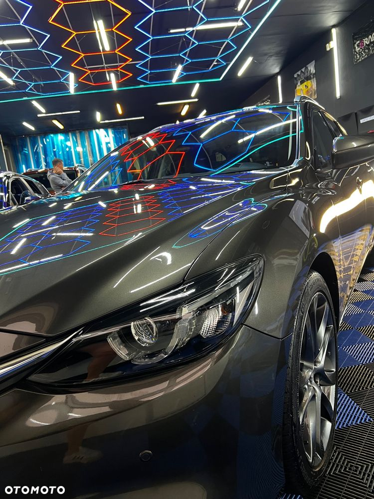
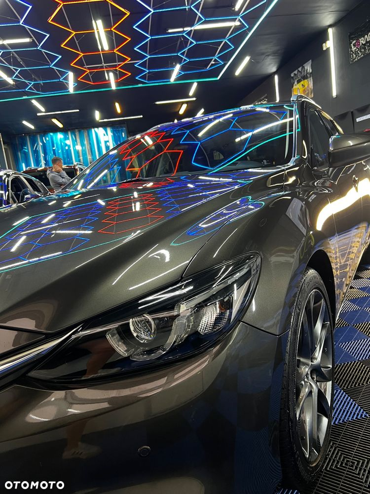

Mazda 6 SkyPASSION z silnikiem 2.5 benzyna 192 KM + automat+ łopatki zmiany biegów. . Topowa wersja wyposażenia: BOSE, skóra, podgrzewane siedzenia przód+tył, kamera cofania i czujniki przód +tył, asystent pasa ruchu. Kolor szarobrązowy metalik. Stan bardzo dobry, auto bezwypadkowe, serwisowane tylko w ASO. Gotowe do jazdy.
Na sprzedaż oferuję Mazdę 6 w najwyższej wersji wyposażenia SkyPASSION z dynamicznym, wolnossącym silnikiem 2.5 benzyna o mocy 192 KM, połączonym z automatyczną skrzynią biegów wyposażoną w łopatki zmiany biegów. Auto z grudnia 2015 roku, użytkowane prywatnie, zadbane, na bieżąco serwisowane przez wszystkie lata w ASO.
Mocno doposażone: np. CARPLAY, Listwy w progach podświetlone, listwa przy wyjściu z bagażnika.
Mazda 6 SkyPASSION 2.5 Benzyna 192KM | Automat | Full opcja | Grudzień 2015 | Serwisowana w ASO | Bez wkładu!
Na sprzedaż oferuję Mazdę 6 w najwyższej wersji wyposażenia SkyPASSION z dynamicznym, wolnossącym silnikiem 2.5 benzyna o mocy 192 KM, połączonym z automatyczną skrzynią biegów. Auto z grudnia 2015 roku, użytkowane prywatnie, na bieżąco serwisowane tylko i wyłącznie w ASO – nie wymaga żadnych inwestycji.
 
